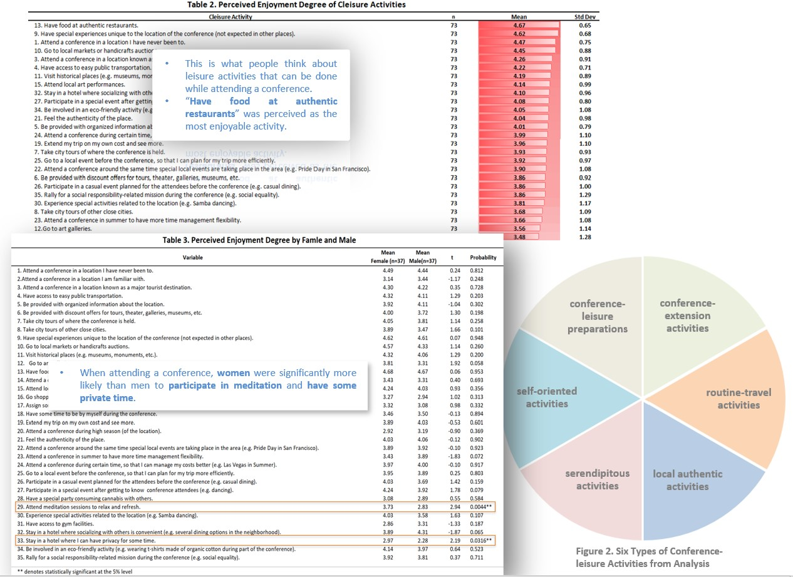
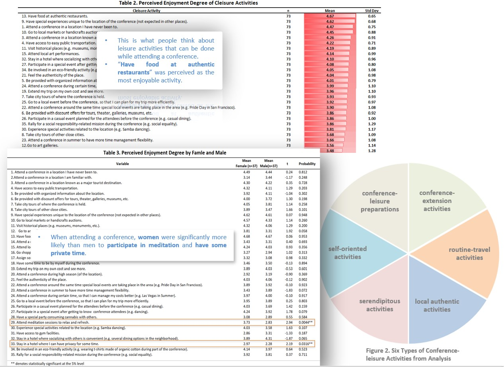

Cleisure: Contribution of Leisure Programming to Conference Enjoyment
Research published in Proceedings of 25th Annual Graduate Research Conference in Hospitality and Tourism, Las Vegas, USA (pp.238, #264).

Summary:
The festivalization of events is a growing trend that involves incorporating elements of carnival into business events and conventions to improve attendee engagement. As this trend continues, it is important to understand how the inclusion of leisure activities can enhance conference enjoyment. This research aims to explore the impact of leisure activities on academic conference attendees' overall trip enjoyment, introducing the concept of "Cleisure" - the combination of academic conference and leisure.
To predict potential tourists' behavior based on their attitudes towards enjoyable activities, we constructed a questionnaire to gather opinions on 35 conference activities. The results of this research can inform the development of leisure programming for professional and academic conferences. Notably, female respondents demonstrated a significantly higher preference for meditation sessions to relax and refresh compared to their male counterparts. Additionally, females expressed a greater desire for private time than male respondents. These gender-based differences highlight the unique needs of female conference attendees, which warrant further investigation.
My Work:
- Collaborated with team members to develop a range of leisure-oriented activities suitable for academic conferences
- Designed and developed scales and questionnaires to measure the enjoyment and effectiveness of each activity
- Recruited a diverse pool of 73 participants and collected data using Qualtrics platform
- Performed comprehensive statistical analyses including descriptive statistics, t-tests, and factor analysis on the collected data
- Created visually-appealing graphs and tables to clearly illustrate the results of data analysis
- Generated detailed reports on the study results, including actionable recommendations for conference organizers to improve the leisure experience for attendees
- Presented findings and recommendations at public conferences and workshops to promote knowledge sharing and community engagement

Research clips:

